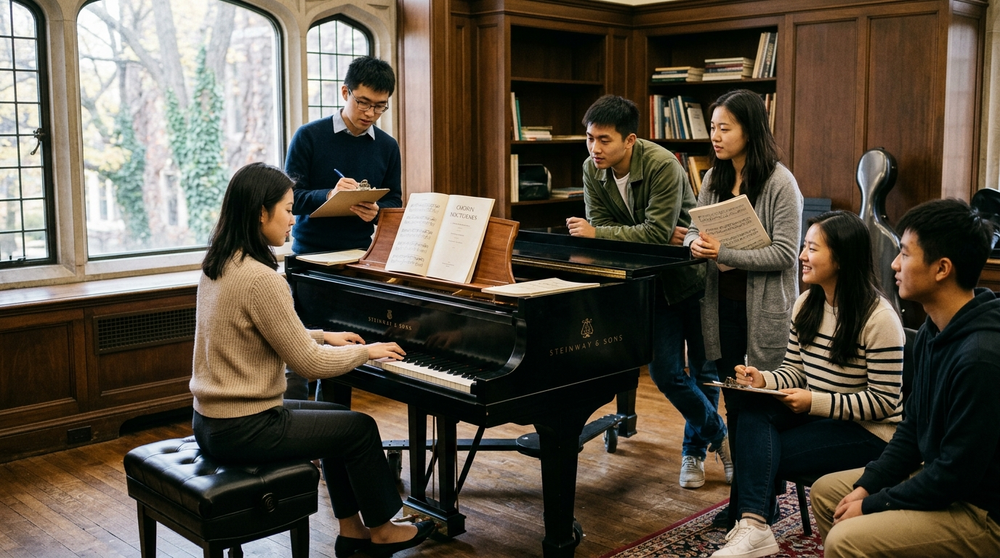

| 计工本2502班 姚金言 202511160210 |
“指尖起落流淌岁月，黑白之间共谱华章” —— 欢迎加入黑白键钢琴社大家庭！
社团简介 | 活动安排 | 风采展示 | 社员故事 | 在线报名
黑白键钢琴社成立于 2016 年春，是直属于校团委与艺术教育中心的星级学生文艺社团。自建社以来，钢琴社始终秉持“普及高雅艺术，点亮校园文化，搭建琴音桥梁，陪伴音乐成长”的宗旨，致力于为全校广大的钢琴爱好者提供一个自由练琴、专业指导、合奏交流与舞台展示的综合性艺术平台。无论你是自幼接受专业训练、具备高超演奏技巧的古典键盘手，还是对五线谱尚存懵懂、但心中一直怀揣着钢琴梦想的零基础新生，黑白键钢琴社都为你敞开最温暖的大门。
社团现拥有琴房 6 间，配备有两架施坦威九尺三角钢琴以及多台立式练习琴，由艺术教育中心专业键盘教师担任社团常年指导教师。在教学与日常活动方面，社团推行“阶梯式互助教学体系”：每周面向零基础及初级社员开设公益基础乐理与键盘指法公开课，由社内考级八级以上的资深高年级社员一对一帮带，从最基础的手型姿态、触键力度、识谱节奏讲起，循序渐进；同时，针对进阶社员定期开展“大师公开课”、“和声编配与流行即兴伴奏实战沙龙”以及“双钢琴与四手联弹专项排练”。
十年来，黑白键钢琴社的足迹遍布校园内外：从每学期初的“迎新草地键盘音乐会”，到金秋时节与交响乐团联合呈现的“协奏曲之夜”，再到每年盛夏的“黑白之韵·毕业季专场演出”，社团成员多次在省市级大学生艺术节键盘独奏及室内乐展演中荣获特等奖与一等奖。更重要的是，在繁重紧张的专业课学习之余，这里是每一位同学释放压力、寻觅知己的精神家园。指尖敲击在象牙色的琴键上，清脆的音符便化作心灵最真挚的共鸣。加入我们，让你的大学四年因优雅跳动的琴键而熠熠生辉！
2026年春季学期，钢琴社经过社务委员会精心策划，为广大新老成员准备了一系列丰富多元的艺术活动。活动涵盖基础入门、技能精进、舞台汇报及跨界交流，欢迎新成员踊跃参与！
| 钢琴社 2026 年春季学期活动安排表 | |||
|---|---|---|---|
| 活动名称 | 活动时间 | 活动地点 | 负责人 |
| 新成员见面会 | 3 月第 2 周 周五晚 19:00 |
艺术楼 201 音乐琴房 （社团专属排练主教室） |
姚金言（会长） |
| 钢琴基础教学公开课 | 3 月第 3 周 周六下午 14:30 | 林雨墨（教学部） | |
| 春季双钢琴与四手联弹音乐沙龙 | 4 月第 3 周 周日晚 19:00 | 大学生活动中心 302 排演厅 | 张副社长 |
| 流行钢琴即兴伴奏编配研讨会 | 5 月第 2 周 周六下午 15:00 | 图书馆报告厅（东区一楼） | 陈学长 |
| “黑白之韵”2026期末专场音乐会 | 6 月第 1 周 周六晚 19:30 | 校大礼堂 青年大剧场 | 姚金言 / 全体社员 |
* 注：若遇校历调整或场地协调等特殊情况，具体时间以社团 QQ 群及微信公众号每周预告为准。各活动均计入第二课堂艺术实践积分。
音乐不仅是独自一人的潜心练习，更是同好相聚时的灵感迸发与舞台上的璀璨绽放。下方展示的是钢琴社社员在琴房日常排练与学术交流中的精彩瞬间。

▲ 图为钢琴社社员在琴房共同研习琴谱与轮流演奏（点击上方图片跳转至活动简介页面）
在暖意融融的下午，阳光洒在黑白琴键与金黄谱架之间，琴房里既有手指轻巧跳跃的欢快车尔尼练习曲，也有大家围坐一堂、对肖邦夜曲中触键深度与踏板运用的热烈探讨。社团内部常年维持着包容求真的探讨氛围，无论水平高低，每一次分享都能得到大家的掌声与鼓励。
以下为社团宣传精彩短片，展示了社员们在各大晚会舞台上的演奏风采与琴房日常训练掠影：
▲ 钢琴社宣传短视频（embed 标签多媒体嵌入）
大二计算机系的李同学回忆起刚进大学时的情景：“刚迈进大学校门时，我连五线谱上的中央C在哪里都搞不清楚，看到琴键甚至会心跳加速。招新那天，站在黑白键钢琴社的摊位前犹豫了半天，是热情的姚会长微笑着把我拉进群的。”
进入社团后，林学姐成为了他的“结对导师”。从认识高音谱号、训练手型手腕的放松，到《拜厄基础教程》的右手单旋律练习，李同学每周风雨无阻地参加两堂教学辅导课，晚自习后坚持在社团分配的练习琴位上打卡40分钟。手指磨得酸痛时，身旁同样在苦练的高年级同学会送来一颗糖，轻声纠正他的小拇指发力姿势。
一学期下来，从最初的磕磕绊绊，到流畅弹完《致爱丽丝》与《克罗地亚狂想曲》的前奏；在大一下学期的新年晚会社团联合汇演中，李同学穿上整洁的西装，从容坐在琴凳上完成了人生第一次舞台表演。曲终掌声雷动的刹那，他红着眼眶说：“在钢琴社，我发现原来热爱真的可以战胜零基础的恐惧，这里的每一个人都在托举你的梦想。”
外语学院的王同学性格内敛害羞，平日里与陌生人对视都会脸红。虽然她自小考过了钢琴九级，但长期一个人关在房间里枯燥练习，让她渐渐对钢琴产生了厌倦感，更不敢在任何公开场合触碰琴键。
在室友鼓励下加入钢琴社后，社长发掘了她的扎实基本功，主动邀请她参加春季音乐沙龙的“四手联弹”项目，与另一位开朗活泼的社员小张搭档排练莫扎特《D大调双钢琴奏鸣曲》。刚开始排练时，王同学手腕紧绷，频频踩错踏板，甚至一度想要退出。搭档小张不仅没有丝毫埋怨，反而耐心地配合她的呼吸节拍，一遍遍放慢速度倾听两组声部的呼应。
在一次次默契相视而笑的呼吸合拍中，王同学第一次感受到琴键不是孤独的倾诉，而是两个灵魂无需言语的默契对话。当两人在沙龙演艺厅里完美收官最后一个和弦时，台下所有社友起立鼓掌。现在的王同学不仅成了社团合奏排演的中坚力量，更成为了爱笑、健谈的音乐骨干。黑白键不仅弹奏出美妙旋律，更彻底治愈了她的青春孤独。
机械工程学院的陈学长即将面临毕业，翻看他在钢琴社留下的厚厚签到册，满是时光沉淀的痕迹：“工科的学业非常繁重，画不完的CAD图纸、解不完的力学方程常常让人精疲力竭。但只要晚上十点走出实验室，推开艺术楼201琴房的门，听着门内传来的德彪西《月光》，所有的焦虑瞬间烟消云散。”
在钢琴社的三年里，大家一起在考试周互相监督复习，在周末清晨相约爬山采风，在每一届社员生日时用八手联弹奏响《生日快乐歌》。大家因共同的音乐爱好聚在一起，没有繁琐的功利竞争，只有最纯粹的艺术热爱。无论未来走向各行各业，在黑白键钢琴社度过的流金岁月，都将是大家一生中最珍贵的心灵滋养。
无论你有无钢琴基础，黑白键钢琴社都热忱期待你的加入！请认真填写以下个人资料，填写完毕后点击“提交报名”。社团教学部将在3个工作日内通过短信与微信联系您，安排新老社员见面会与排练琴卡发放。
黑白键钢琴社 · 2026 年春季招新主页
制作人：计工本2502班 姚金言（学号：202511160210）
本页面为 Web 网页设计课程第二次上机作业（work2）实践成果